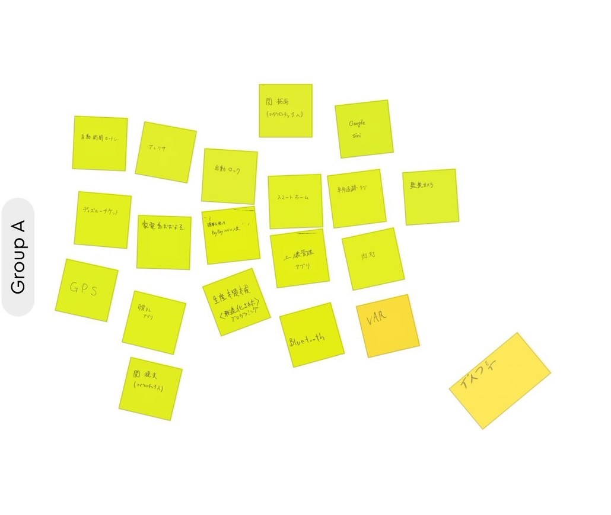
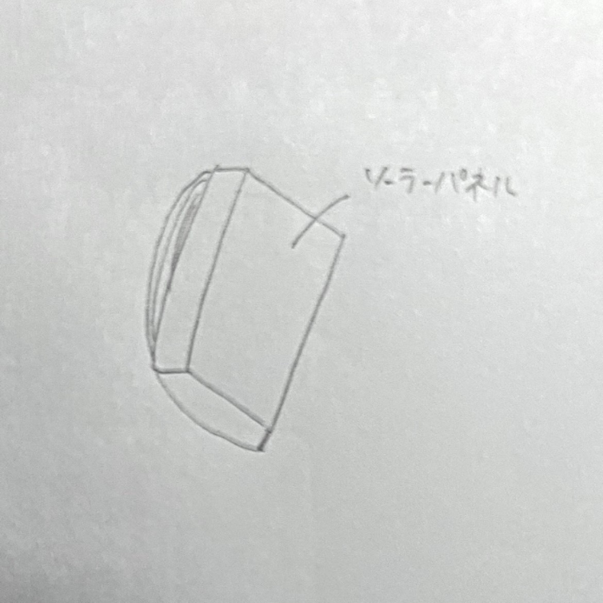

IoTに必要なもの
サーバー・・・サービスを管理するもの。 データベース・・・サービスを提供することで収集した情報をため込んでおくもの。
IoTで何ができそうか？グループワークした内容（ポストイット画像）

IoTで何ができそうか？自分で考えたアイディア（スケッチ）
リュックにソーラーパネルがついていて、発電できるもの。
リュックの中にあるパソコンなどを充電することができる。
余った電気はバッテリーに充電することができる。
